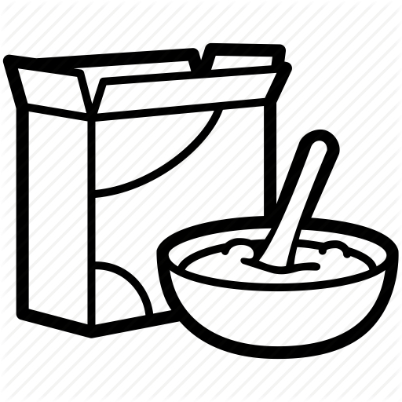
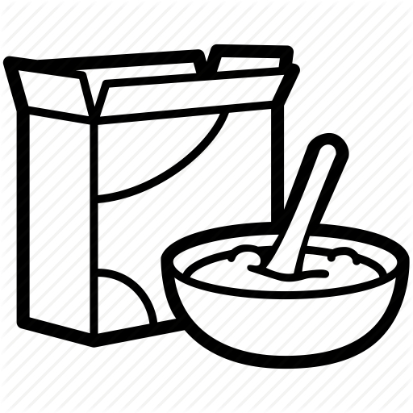

General Meetings Every Wednesday | 7PM @ Watkins Hall 1000!
Member Recognition Program
The Membership Recognition Program (MRP) is tier-based system that we have here at Circle K where members
can be recognized for their dedication and service to the club. Recipients of MRP are those who exemplify
themselves in our three tenets – service, leadership, and fellowship!
The MRP term repeats annually, starting from Spring quarter and ending at the Winter quarter. Here at Circle K
at UCR, we have a tradition of celebrating the achievements of our MRP recipients during Spring quarter,
following the end of each MRP term! Every year, the MRP requirements changes slightly, but remain similar for
the most part. You’ll be able to find the MRP requirements for the 2019-2020 term here!
Contact our Member Recognition Chair, Gustavo Del Castillo for more information!
MRP Level
Bronze
Silver
Gold
Platinum
Service Hours
50
80
130
200
Dues Paid
Additional Requirements
5
6
8
11
Socials (SE)
3
4
6
9
MD&E Events (MD)
2
3
4
5
Fundraisers (FR)
1
2
3
4
Alumni (AL)
1
1
2
2
Kiwanis Family (KF)
2
3
4
5
Interclub (IN)
1
2
3
4
Divisional Events (DV)
2
3
4
5
District Events (DE)
1
2
2
3
International Events (INT)
1
1
1
1
Articles Submitted
1
2
3
4
Webinars Attended (WB)
4
5
6
7
Chaired Events
1
2
3
4
Host Workshop or Webinar
Club Committee Member
Master Records Sheet
Hi! Do you want to see how many service hours you have done? Do you want to know what events you went to?
Well you can take a look at the MRS (Master Records Sheet)! And if you are a paid member, you can see
how close you are to reaching MRP (Member Recognition Program)!
The MRS is updated every month and if you have
any questions about your individual hours or how to navigate the MRS, please feel free to email the
secretary, Amy Kobayashi, at akobayashi.cki@gmail.com or message her on Facebook!

 
